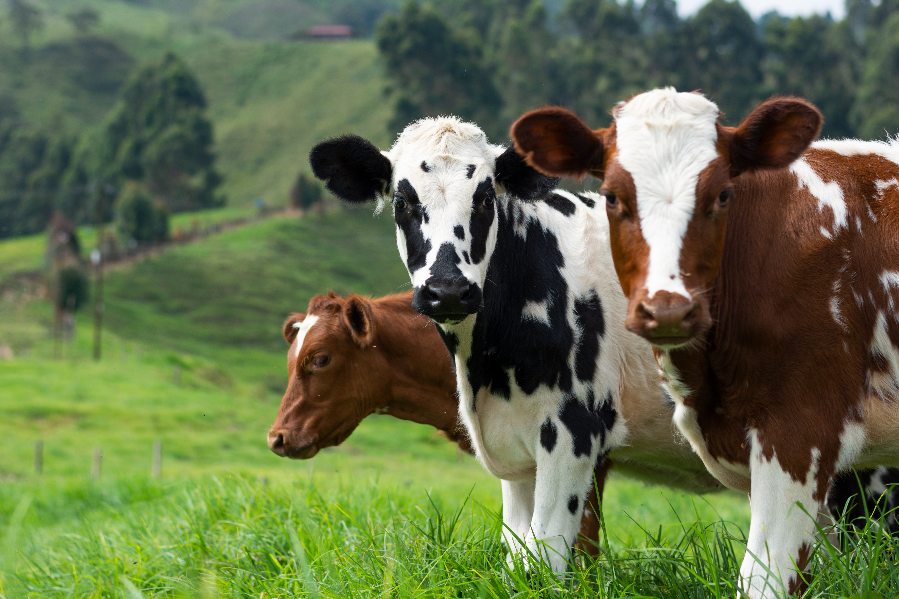

Vaca
da família BovídeosO macho da espécie recebe o nome de boi, ou touro, enquanto que a fêmea é conhecida por vaca e o animal jovem por bezerro, e depois novilho.
A espécie é um ruminante, ou seja, regurgita o alimento para a boca após sua ingestão, onde é novamente mastigado e deglutido. O estômago dos ruminantes é dividido em retículo, rúmen, omaso e abomaso.

Essa espécie foi domesticada pelo homem e é utilizada em larga escala em muitas atividades como a produção de carne e de leite, representando grande importância para a economia de muitos países.
O gado doméstico descende do auroque na Europa e do gauro na Ásia. Sua domesticação teve início há mais de 5 000 e 6 000 anos atrás. Os bovinos domesticado tinham várias serventias para o ser humano: como animal de carga (assim como a cabra e os cavalos) e a produção de leite em vida e carne/couro após a morte.
"Em condições naturais, os bezerros ficam com a mãe até o desmame de 8 a 11 meses."
- Surgiu: 8 mil anos
- Tipo: Mamífero
- Idade Média: 10 anos
- Macho adulto: 700 kg
- Fêmea adulta: 600 kg
- Família:Bovídeos
"No Brasil, a criação de gado foi iniciada tão logo foram implantados os primeiros engenhos de açúcar em Pernambuco, na primeira metade do século XVI. Serviam para abastecer, de leite e carne, as pessoas que se estabeleciam na área de influência de cada engenho.."
As novilhas semisselvagens do gado das terras altas dão à luz aos 2 ou 3 anos de idade, e o momento do nascimento é sincronizado com o aumento da qualidade natural dos alimentos.